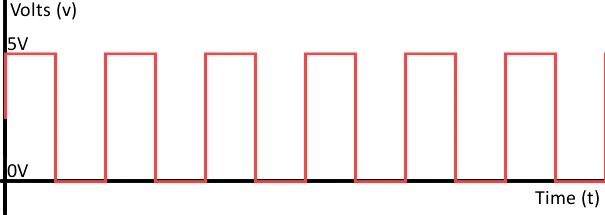
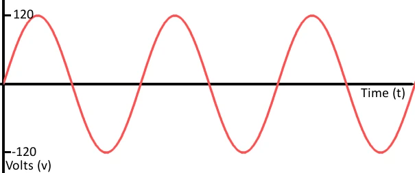

En esta extensa práctica de investigación, se exploraron 30 sensores de diferentes tipos, incluyendo sensores digitales, analógicos e inteligentes. El objetivo principal de esta investigación fue conocer en profundidad la variedad de sensores disponibles y su aplicabilidad en diferentes situaciones. Posteriormente, se llevaron a cabo dos enfoques distintos para la implementación práctica, utilizando tanto la placa Arduino Uno como el microcontrolador ATtiny85. El proceso de investigación se centró en la identificación y comprensión de cada tipo de sensor, considerando sus principios de funcionamiento, características técnicas, ventajas y limitaciones. Esto permitió una selección informada de los sensores más adecuados para las aplicaciones deseadas. Una vez completada la fase de investigación, se procedió a la creación de dos circuitos para cada tipo de sensor, es decir, dos circuitos digitales, dos analógicos y dos inteligentes, lo que resultó en un total de seis circuitos. Estos circuitos se diseñaron y ensamblaron teniendo en cuenta las especificaciones de cada sensor, así como las necesidades del proyecto en el que se aplicarían.
La programación de estos circuitos se llevó a cabo utilizando tanto la placa Arduino Uno como el microcontrolador ATtiny85. Esto permitió demostrar la versatilidad de ambas plataformas en la implementación de sistemas basados en sensores. Se desarrollaron programas específicos para cada configuración de sensor, asegurando la adquisición de datos precisa y el procesamiento necesario.
- Introducción -
Los sensores son dispositivos que detectan y convierten información del mundo real en señales eléctricas o digitales que pueden ser procesadas y utilizadas para una variedad de aplicaciones. Existen tres tipos principales de sensores: sensores digitales, sensores analógicos y sensores inteligentes. A continuación, se describe cada tipo de sensor y sus características:
Sensores Digitales: Los sensores digitales producen señales de salida en forma de datos digitales, como códigos binarios o valores numéricos. Suelen ser más precisos y menos susceptibles a interferencias que los sensores analógicos. Los sensores digitales son ampliamente utilizados en aplicaciones que requieren alta precisión y fácil procesamiento de datos, como en la electrónica de consumo, la automatización industrial y los sistemas de control. Ejemplos de sensores digitales incluyen sensores de temperatura digital, sensores de presión digital y sensores de movimiento por infrarrojos.

Sensores Analógicos: Los sensores analógicos generan señales de salida que varían de manera continua en respuesta a cambios en la magnitud de la variable medida. Estas señales son representadas generalmente como voltajes o corrientes analógicas proporcionales a la magnitud de la variable medida. Los sensores analógicos se utilizan en aplicaciones donde la precisión puede no ser crítica y se necesita una representación continua de la información, como en la medición de niveles de líquidos, señales de audio y sensores de luz. Ejemplos de sensores analógicos incluyen termopares, sensores de luz fotoresistivos y sensores de fuerza piezoeléctricos./p>

Sensores Inteligentes: Los sensores inteligentes son una evolución de los sensores tradicionales, ya que incorporan capacidades de procesamiento y comunicación en el propio sensor. Estos sensores pueden realizar tareas de procesamiento de datos, tomar decisiones y comunicarse con otros dispositivos sin necesidad de una unidad de control externa. Los sensores inteligentes son esenciales en aplicaciones de Internet de las Cosas (IoT), donde se requiere la recopilación y transmisión de datos en tiempo real. Ejemplos de sensores inteligentes incluyen sensores de movimiento con conectividad Wi-Fi, sensores de humedad con capacidades de análisis de datos y sensores de calidad del aire con capacidad de informar automáticamente a sistemas de control.
La elección entre sensores digitales, analógicos o inteligentes depende de las necesidades específicas de una aplicación. Los sensores digitales son ideales cuando se requiere precisión y facilidad de procesamiento de datos, mientras que los sensores analógicos son útiles en aplicaciones que demandan una representación continua de la información. Los sensores inteligentes son esenciales en entornos donde se necesita una comunicación y toma de decisiones autónomas. La elección del sensor adecuado dependerá de los requisitos de la aplicación y el contexto en el que se utilice.
A continuación se muestra una tabla con 30 sensores diferentes y sus especificaciones: